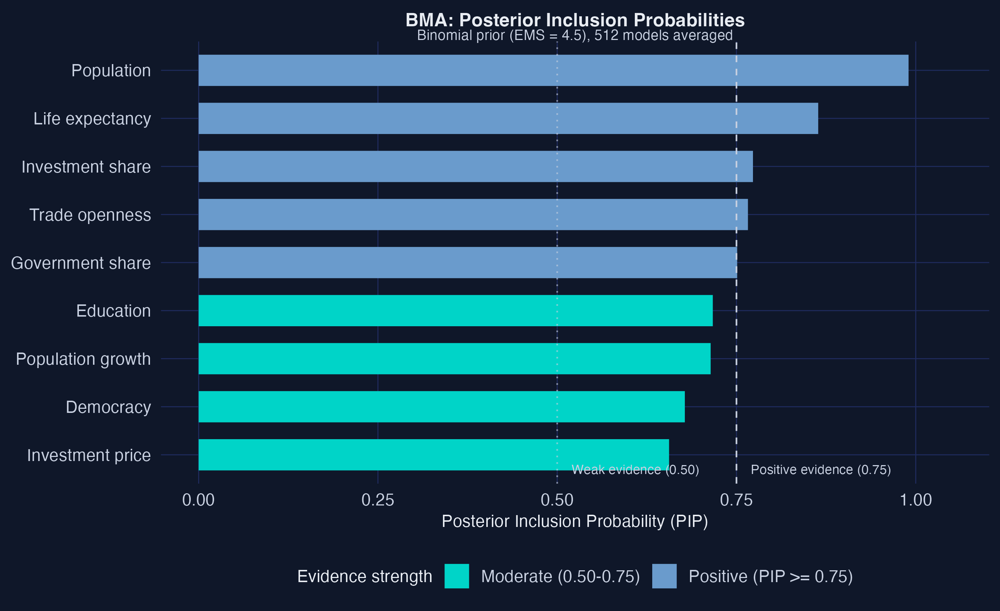
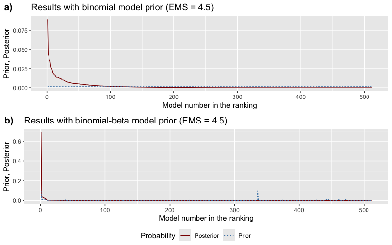
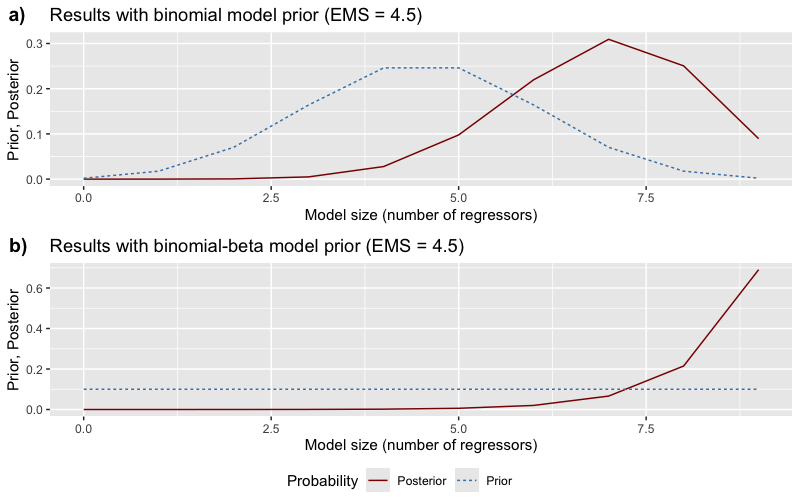
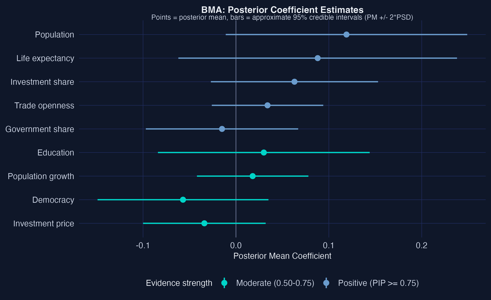
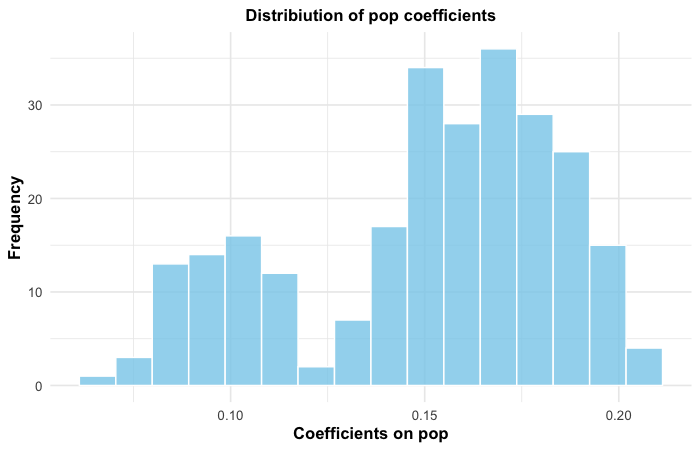
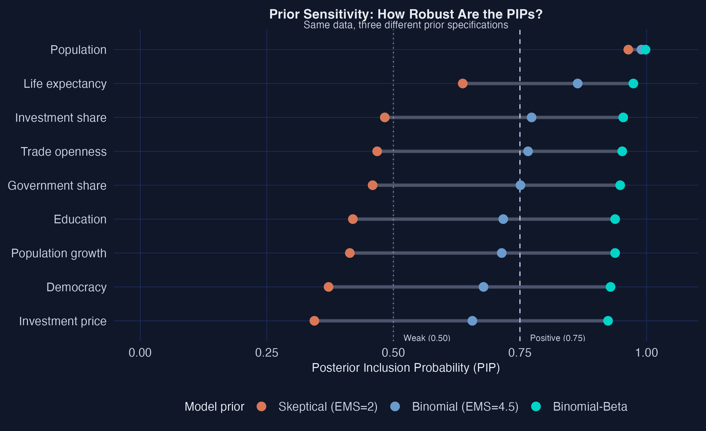
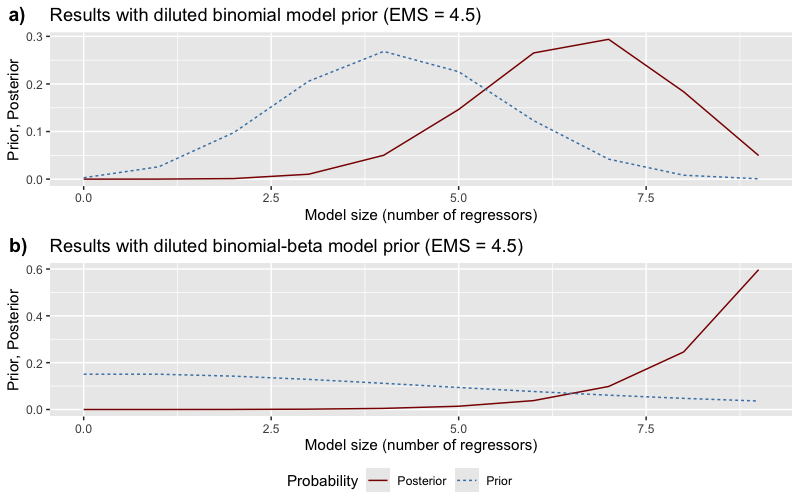

Which factors truly drive economic growth — once reverse causality is handled?
Nagoya University (GSID)
July 8, 2026
Act I
You advise a government with a panel of 73 countries over four decades and nine candidate drivers — investment, education, trade, population, life expectancy, and more.
But today’s GDP may itself cause investment and trade. Can you trust a regression that assumes the arrow only runs one way?
Build one model with all 9 regressors? Drop trade? Use only investment and education? With 9 candidates there are \(2^9 = 512\) possible specifications.
Bayesian Model Averaging refuses to pick one. It averages all 512, weighting each by how well it fits — so the conclusion never rests on a single lucky specification.
Act II
Judge a runner’s program by their finish time — but faster runners also chose better programs. Did the program cause the speed, or the speed attract the program?
That is reverse causality. Countries that grow faster invest, trade, and educate more — so a model averaged over biased specifications averages over biased answers.
\[\ln y_{it} = \alpha \ln y_{i,t-1} + \beta' x_{it} + \eta_i + \zeta_t + v_{it}\]
The convergence prediction puts last period’s GDP on the right-hand side. The persistence \(\alpha\) measures how slowly countries approach their steady state.
Omitting \(\ln y_{i,t-1}\) assumes \(\alpha = 0\) — instantaneous convergence, which the data flatly rejects.
data_std <- feature_standardization(economic_growth,
excluded_cols = c(country, year, gdp)) # mean 0, sd 1
# demean by year → remove time fixed effects, then estimate every model
full <- optim_model_space(df = data_prepared,
dep_var_col = gdp, timestamp_col = year,
entity_col = country, init_value = 0.5)
bma_results <- bma(full, df = data_prepared, round = 3)Marginal likelihood scores each of 512 “recipes” — rewarding fit, penalizing needless complexity.
| Regressor | Coef. | p-value | Sig. 5%? |
|---|---|---|---|
| lag GDP | 0.619 | 0.000 | yes |
| trade openness | 0.120 | 0.002 | yes |
| education | 0.016 | 0.632 | no |
| life expectancy | 0.115 | 0.637 | no |
Drop one variable and the significance pattern changes — this fragility is what BMA is built to fix.

Posterior Inclusion Probabilities, all 9 regressors, sorted with the 0.75 and 0.50 threshold lines.
0.990
Population PIP under the binomial prior — appears in virtually every high-quality model

Prior (flat, dashed) vs posterior (concentrated, solid) probability across all 512 models.

Prior vs posterior distribution over model sizes (regressors excluding the lagged outcome).
8.9%
Posterior weight on the top-ranked specification; the other 91% spreads across hundreds of nearby models

Posterior means with approximate 95% credible intervals (\(\text{PM} \pm 2\cdot\text{PSD}\)) for all 9 regressors.

Posterior coefficient distribution for population across all 512 models, weighted by model probability.

PIPs under three priors (skeptical EMS=2, binomial, binomial-beta). Segment width = sensitivity.

Model sizes under the dilution prior (penalizing correlated regressors); expected size falls 6.91 → 6.53.
Act III
\[\alpha \approx 0.92 \;\Rightarrow\; \text{convergence speed} = 1 - \alpha \approx 0.08 \text{ per decade}\]
The lagged-GDP coefficient near 0.92 means a country’s income is dominated by its own past — convergence to its steady state is a slow crawl.
That persistence absorbs the cross-sectional variation, leaving fewer variables with independent power.
| Determinant | Bin. | Bin-Beta | EMS=2 | Verdict |
|---|---|---|---|---|
| population | 0.990 | 0.998 | 0.964 | Robust |
| life expectancy | 0.864 | 0.974 | 0.637 | Robust |
| investment share | 0.773 | 0.954 | 0.483 | Sensitive |
| democracy | 0.678 | 0.929 | 0.372 | Sensitive |
Robust = PIP above 0.5 even under the skeptical prior. Only two determinants qualify.
Objection. Adding a lagged outcome and fixed effects can’t manufacture causal identification.
Response. Correct. The estimates are consistent only under weak exogeneity — current regressors uncorrelated with the current shock. If contemporaneous feedback is strong, bias remains. BMA handles model uncertainty and reverse causality through persistence; it does not relax the identifying assumption.